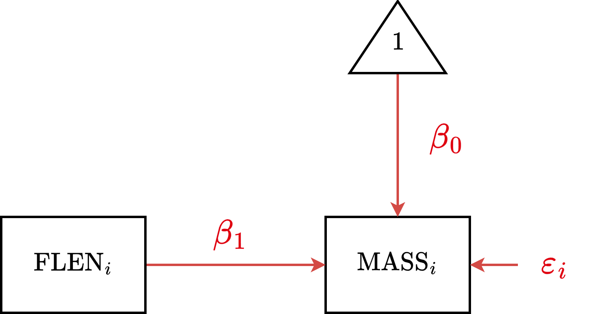
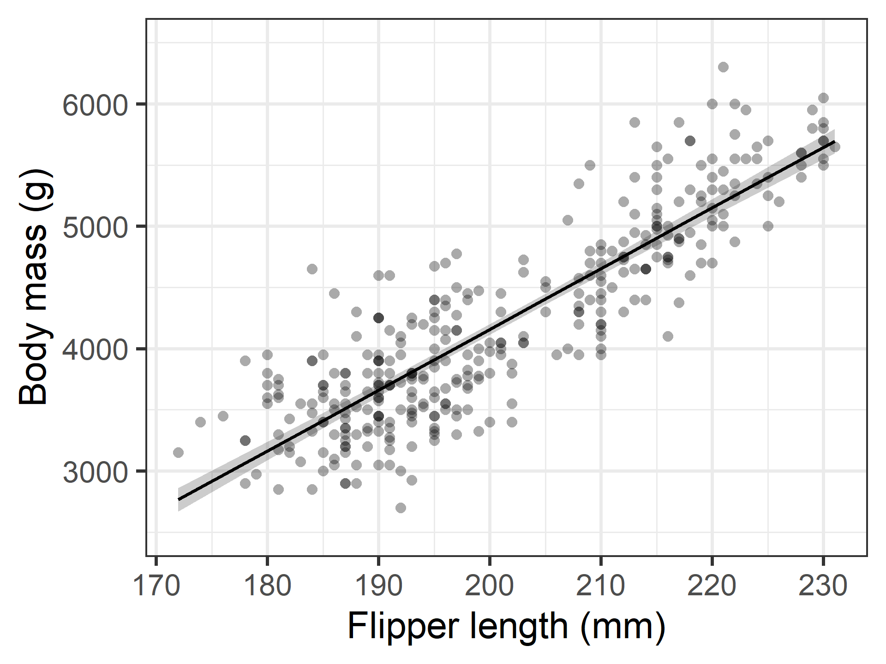
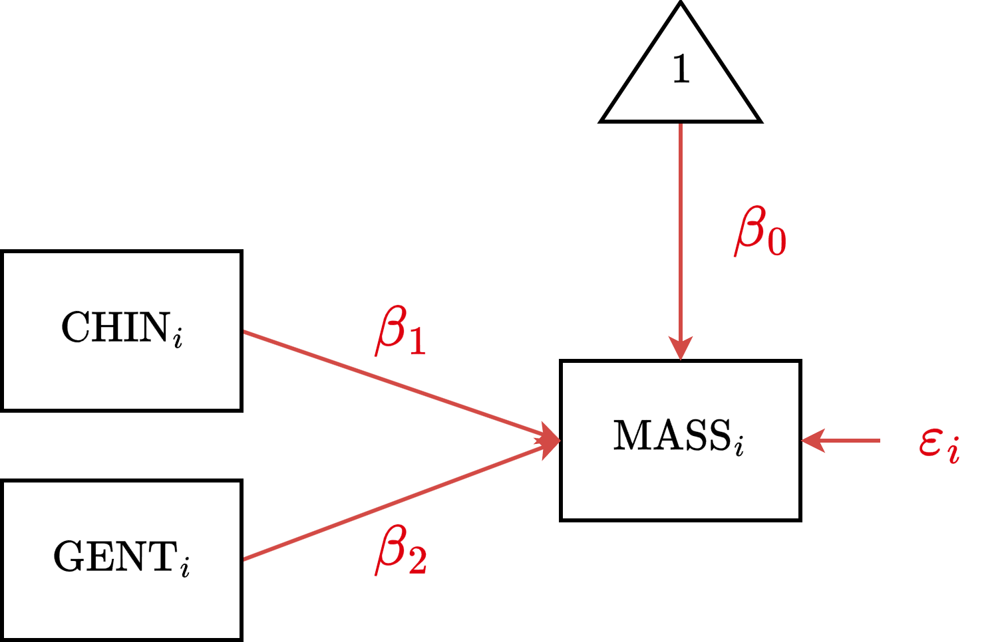
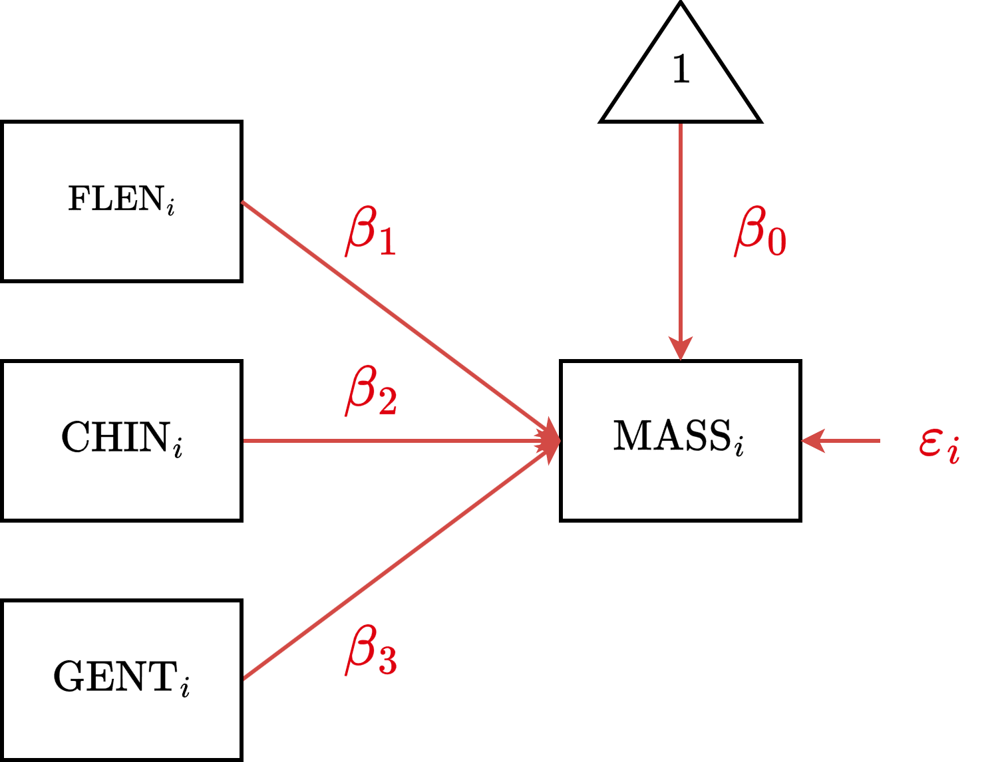

# install.packages(c("easystats", "ggplot2", "marginaleffects"))
library(easystats)
library(ggplot2)
library(marginaleffects)Multilevel Modeling
Linear Modeling Review (1/2)
Spring 2026 | CLAS | PSYC 894
Jeffrey M. Girard | Lecture 02a
Roadmap
Simple Regression
Multiple Regression
Categorical Predictors
R Setup
Load Packages
Needs to be loaded
- easystats will provide most of our statistical functions
- ggplot2 will provide the ability to customize our plots
Needs to be installed
- marginaleffects is called by easystats for estimation
Example Dataset
penguins (344 rows and 8 variables, 8 shown)
ID | Name | Type | Missings | Values | N
---+-------------+-------------+-----------+--------------+------------
1 | species | categorical | 0 (0.0%) | Adelie | 152 (44.2%)
| | | | Chinstrap | 68 (19.8%)
| | | | Gentoo | 124 (36.0%)
---+-------------+-------------+-----------+--------------+------------
2 | island | categorical | 0 (0.0%) | Biscoe | 168 (48.8%)
| | | | Dream | 124 (36.0%)
| | | | Torgersen | 52 (15.1%)
---+-------------+-------------+-----------+--------------+------------
3 | bill_len | numeric | 2 (0.6%) | [32.1, 59.6] | 342
---+-------------+-------------+-----------+--------------+------------
4 | bill_dep | numeric | 2 (0.6%) | [13.1, 21.5] | 342
---+-------------+-------------+-----------+--------------+------------
5 | flipper_len | integer | 2 (0.6%) | [172, 231] | 342
---+-------------+-------------+-----------+--------------+------------
6 | body_mass | integer | 2 (0.6%) | [2700, 6300] | 342
---+-------------+-------------+-----------+--------------+------------
7 | sex | categorical | 11 (3.2%) | female | 165 (49.5%)
| | | | male | 168 (50.5%)
---+-------------+-------------+-----------+--------------+------------
8 | year | integer | 0 (0.0%) | 2007 | 110 (32.0%)
| | | | 2008 | 114 (33.1%)
| | | | 2009 | 120 (34.9%)
-----------------------------------------------------------------------Note that this dataset is already included with recent versions of R.
CSR
Continuous Simple Regression
CSR Overview
- Simple regression predicts one variable \(y\) from another variable \(x\) using a straight line
- This line is defined by two parameters
- The intercept is the value of \(y\) when \(x=0\)
- The slope is the change in \(y\) expected for a change of 1 in \(x\) (from \(x=0\) to \(x=1\))
- We will use
lm()to fit regression models- This will solve using ordinary least squares
- We need to give it the data and a formula
CSR Equation
Generic
\[y_i = \beta_0 + \beta_1 x_{i} + \varepsilon_{i}\]
Example
\[\text{MASS}_i = \beta_0 + \beta_1 \text{FLEN}_{i} + \varepsilon_i\]
CSR Formula
Generic
y ~ 1 + x
Example
body_mass ~ 1 + flipper_len
CSR Diagram

CSR Estimation
CSR Interpretation
Intercept \((\beta_0 = -5780.8\), \(p<.001)\)
The body mass (g) expected for a penguin with a flipper length of 0mm.
This is biologically impossible, suggesting we should center our predictor.Flipper Length Slope \((\beta_1 = 49.7\), \(p<.001)\)
The expected change in body mass (g) for every 1mm increase in flipper length.Conclusion
Flipper length is significantly and positively related to body mass.
CSR Centering
Parameter | csr_f | csr_f_c
---------------------------------------
(Intercept) | -5780.83*** | 4201.75***
flipper len | 49.69*** | 49.69***
---------------------------------------
Observations | 342 | 342Note: The slope \((\beta_1)\) does not change. However, the intercept \((\beta_0)\) is now the expected body mass for a penguin with average flipper length.
CSR Standardizing
Parameter | csr_f | csr_f_z
----------------------------------------
(Intercept) | -5780.83*** | 1.02e-15
flipper len | 49.69*** | 0.87***
----------------------------------------
Observations | 342 | 342Note: The intercept is now zero. The slope is now the change in body mass in Standard Deviations (SDs) for a 1 SD increase in flipper length.
CSR Visualization
Plot Customization
# Use the black-and-white theme and
# use 30pt font for all future plots
theme_set(theme_bw(base_size = 30))
plot(
pred_csrf,
show_data = TRUE,
point = list(color = "salmon"),
line = list(linewidth = 1.5)
) +
scale_y_continuous(
limits = c(2500, 6500)
) +
labs(
x = "Flipper length (mm)",
y = "Body mass (g)"
)
CMR
Continuous Multiple Regression
CMR Overview
- We can include multiple predictors to assess the unique effect of each predictor
- This controls for the variance shared between predictors (collinearity)
- This changes the interpretation of slopes
- Simple Regression: “zero-order” or Total Effect
- Multiple Regression: “partial” or Unique Effect
- Interpretation:
- The partial effect of a predictor is the change in \(y\) expected for a change of 1 in that predictor, while holding all other predictors constant
CMR Equation
Generic
\[y_i = \beta_0 + \beta_1 x_{1i} + \beta_2 x_{2i} + \dots + \varepsilon_{i}\]
Example (with 2 predictors)
\[\text{MASS}_i = \beta_0 + \beta_1 \text{FLEN}_{i} + \beta_2 \text{BDEP}_{i} + \varepsilon_i\]
CMR Formula
Generic
y ~ 1 + x1 + x2 + ...
Example (with 2 predictors)
body_mass ~ 1 + flipper_len + bill_dep
CMR Diagram
CMR Estimation
Parameter | Coefficient | SE | 95% CI | t(339) | p
---------------------------------------------------------------------------
(Intercept) | -6541.91 | 540.75 | [-7605.56, -5478.26] | -12.10 | < .001
flipper len | 51.54 | 1.87 | [ 47.87, 55.21] | 27.64 | < .001
bill dep | 22.63 | 13.28 | [ -3.49, 48.76] | 1.70 | 0.089 CMR Interpretation
Intercept \((\beta_0 = -6541.9\), \(p<.001)\)
The body mass (g) expected when both Flipper Length and Bill Depth are 0mm.Flipper Length Partial Effect \((\beta_1 = 51.5\), \(p<.001)\)
The expected change in body mass (g) for every 1mm increase in Flipper Length,
holding Bill Depth constant.Bill Depth Partial Effect \((\beta_2 = 22.6\), \(p=.089)\)
The expected change in body mass (g) for every 1mm increase in Bill Depth,
holding Flipper Length constant.Conclusion
Flipper length is uniquely predictive of Body Mass, whereas Bill Depth is not.
Comparing Estimates
Parameter | csr_f | csr_b | cmr_fb
-----------------------------------------------------
(Intercept) | -5780.83*** | 7488.65*** | -6541.91***
flipper len | 49.69*** | | 51.54***
bill dep | | -191.64*** | 22.63
-----------------------------------------------------
Observations | 342 | 342 | 342Notice that Bill Depth was significant on its own (csr_b), but loses significance when Flipper Length is added (cmr_fb). This is because Flipper Length “explains away” the variance.
Comparing Plots 1
Comparing Plots 2
DSR
Discrete Simple Regression
DSR Overview
- To include a discrete predictor, the model will automatically use dummy coding
- This creates binary \((0/1)\) “switches”
- One group is chosen as the Reference Group
- This group is represented by the Intercept
- The slopes for other groups represent differences from the reference
- In R, simply include a factor in the formula
- R treats the first level as the Reference group
- You can create a factor if needed using
factor()
DSR Equation
Generic
\[y_i = \beta_0 + \beta_1 D_{1i} + \dots + \varepsilon_{i}\]
Example (with 3 Groups)
\[\text{MASS}_i = \beta_0 + \beta_1 \text{CHIN}_i + \beta_2 \text{GENT}_i + \varepsilon_i\]
DSR Formula
Generic
y ~ 1 + f
Example (with 3 Groups)
body_mass ~ 1 + species
DSR Diagram

DSR Data Prep
The species variable is already a factor!
But if it wasn’t, we would need to convert it:
DSR Estimation
Parameter | Coefficient | SE | 95% CI | t(339) | p
--------------------------------------------------------------------------------
(Intercept) | 3700.66 | 37.62 | [3626.67, 3774.66] | 98.37 | < .001
species [Chinstrap] | 32.43 | 67.51 | [-100.37, 165.22] | 0.48 | 0.631
species [Gentoo] | 1375.35 | 56.15 | [1264.91, 1485.80] | 24.50 | < .001DSR Interpretation
Intercept \((\beta_0 = 3700.7\), \(p<.001)\)
The predicted body mass (g) for the Reference Group (Adelie).Species [Chinstrap] Total Effect \((\beta_1 = 32.4\), \(p=.631)\)
The body mass difference between Chinstrap and Adelie.
Result: Not significant. Chinstraps are roughly the same size as Adelies.Species [Gentoo] Total Effect \((\beta_2 = 1375.4\), \(p<.001)\)
The body mass difference between Gentoo and Adelie.
Result: Significant. Gentoos are much larger than Adelies.What’s Missing?
We know how all groups compare to Adelie, but do Chinstraps differ from Gentoos?
Standard regression output doesn’t tell us. We need contrasts…
DSR Pairwise Contrasts
Averaged Contrasts Analysis
Level1 | Level2 | Difference | SE | 95% CI | t(339) | p
---------------------------------------------------------------------------------
Chinstrap | Adelie | 32.43 | 67.51 | [-100.37, 165.22] | 0.48 | 0.631
Gentoo | Adelie | 1375.35 | 56.15 | [1264.91, 1485.80] | 24.50 | < .001
Gentoo | Chinstrap | 1342.93 | 69.86 | [1205.52, 1480.34] | 19.22 | < .001
Variable predicted: body_mass
Predictors contrasted: species
p-value adjustment method: Holm (1979)DSR Deviation Contrasts
Averaged Contrasts Analysis
Level1 | Level2 | Difference | SE | 95% CI | t(339) | p
------------------------------------------------------------------------------
Adelie | Mean | -469.26 | 34.22 | [-536.58, -401.94] | -13.71 | < .001
Chinstrap | Mean | -436.83 | 41.80 | [-519.05, -354.62] | -10.45 | < .001
Gentoo | Mean | 906.09 | 35.76 | [ 835.76, 976.43] | 25.34 | < .001
Variable predicted: body_mass
Predictors contrasted: species
p-value adjustment method: Holm (1979)DSR Means
Estimated Marginal Means
species | Mean | SE | 95% CI | t(339)
---------------------------------------------------------
Adelie | 3700.66 | 37.62 | [3626.67, 3774.66] | 98.37
Chinstrap | 3733.09 | 56.06 | [3622.82, 3843.36] | 66.59
Gentoo | 5076.02 | 41.68 | [4994.03, 5158.00] | 121.78
Variable predicted: body_mass
Predictors modulated: speciesDSR Visualization
MMR
Mixed Multiple Regression
MMR Equation
Generic
\[y_i = \beta_0 + \beta_1 x_{1i} + \dots +\beta_2 D_{1i} + \dots + \varepsilon_{i}\]
Example (with 1 continuous predictor and 3 groups)
\[\text{MASS}_i = \beta_0 + \beta_1 \text{FLEN}_i + \beta_2 \text{CHIN}_i + \beta_3 \text{GENT}_i + \varepsilon_i\]
MMR Formula
Generic
y ~ 1 + x1 + ... + f1 + ...
Example (with 1 continuous and 3 groups)
body_mass ~ 1 + flipper_len + species
MMR Diagram
MMR Estimation
Parameter | Coefficient | SE | 95% CI | t(338) | p
-----------------------------------------------------------------------------------
(Intercept) | -4031.48 | 584.15 | [-5180.51, -2882.45] | -6.90 | < .001
flipper len | 40.71 | 3.07 | [ 34.66, 46.75] | 13.25 | < .001
species [Chinstrap] | -206.51 | 57.73 | [ -320.07, -92.95] | -3.58 | < .001
species [Gentoo] | 266.81 | 95.26 | [ 79.43, 454.19] | 2.80 | 0.005 MMR Slope Visualization
MMR Means
Average Predictions
species | Mean | SE | 95% CI | t(338)
---------------------------------------------------------
Adelie | 3700.66 | 30.56 | [3640.55, 3760.78] | 121.09
Chinstrap | 3733.09 | 45.54 | [3643.51, 3822.67] | 81.97
Gentoo | 5076.02 | 33.86 | [5009.41, 5142.62] | 149.91
Variable predicted: body_mass
Predictors modulated: speciesMMR Means Visualization

MMR Pairwise Contrasts
Averaged Contrasts Analysis
Level1 | Level2 | Difference | SE | 95% CI | t(338) | p
---------------------------------------------------------------------------------
Chinstrap | Adelie | 32.43 | 54.84 | [ -75.45, 140.30] | 0.59 | 0.555
Gentoo | Adelie | 1375.35 | 45.61 | [1285.63, 1465.07] | 30.15 | < .001
Gentoo | Chinstrap | 1342.93 | 56.75 | [1231.30, 1454.55] | 23.66 | < .001
Variable predicted: body_mass
Predictors contrasted: species
p-value adjustment method: Holm (1979)MMR Deviation Contrasts
Averaged Contrasts Analysis
Level1 | Level2 | Difference | SE | 95% CI | t(338) | p
------------------------------------------------------------------------------
Adelie | Mean | -469.26 | 27.80 | [-523.95, -414.57] | -16.88 | < .001
Chinstrap | Mean | -436.83 | 33.95 | [-503.62, -370.05] | -12.87 | < .001
Gentoo | Mean | 906.09 | 29.05 | [ 848.96, 963.23] | 31.19 | < .001
Variable predicted: body_mass
Predictors contrasted: species
p-value adjustment method: Holm (1979)